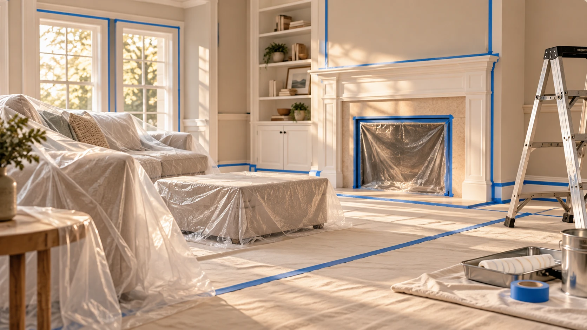

The difference between a paint job that looks fresh for ten years and one that starts peeling or cracking within two isn't the paint brand — it's the preparation. Proper prep means filling every crack and nail hole, sanding surfaces smooth, priming where needed, protecting flooring and furniture, and masking edges cleanly before a single drop of paint is applied. Cornerstone Pro Painting has followed this process on every one of our 500+ projects across Toronto and the GTA.
At the end of every job, we remove every drop cloth, every piece of tape, and every paint tray. Furniture goes back where it was. The floors are clean. The windows aren't smeared. We've heard too many stories from clients who hired painters who left the home messier than they found it — that's never been our standard, and it never will be.
Get a Free Written Estimate →We inspect every surface before painting. Cracks, holes, water stains, and peeling areas are identified and addressed before paint is applied.
Floors are covered with drop cloths secured at the edges. Furniture is moved and fully covered. Windows, trim, and fixtures are masked precisely.
Nail holes are filled. Cracks are patched. Rough areas are sanded. Bare surfaces and stain-prone areas receive primer — all included in the scope.
Drop cloths removed, furniture returned, surfaces wiped down, tape pulled cleanly. We don't leave until the space is ready to use.
Paint adheres to properly prepared surfaces. Skipping sanding or priming leads to peeling and bubbling within years, not decades.
Surface imperfections show through paint. Patching and sanding ensures a smooth, professional final appearance.
Clean masking produces the sharp edges between wall and trim that define a professional paint job.
Proper floor and furniture protection means nothing in your home gets paint on it that shouldn't have it.
Yes. Moving and protecting furniture is part of our standard process. Heavy built-in pieces and items you'd prefer to handle yourself we work around — just let us know in advance.
Yes, surface repair is included in every job. We fill nail holes, patch minor cracks, and sand rough areas before any paint is applied.
We prime all bare drywall, patched areas, and surfaces where staining could bleed through. On previously painted surfaces in good condition with the same or similar colour, a primer coat may not be required — we assess each situation.
All drop cloths removed, furniture returned to original positions, any paint drips wiped from floors or surfaces, tape pulled, and windows and hardware wiped clean. The space is ready to use when we leave.
If paint peels, cracks, or fails on surfaces we prepared and painted within two years of project completion, we return and rectify it at no charge — provided the cause is workmanship and not external damage or moisture intrusion.
Thorough prep, spotless cleanup, 2-year warranty. Free written estimate within 12 hours.